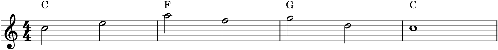
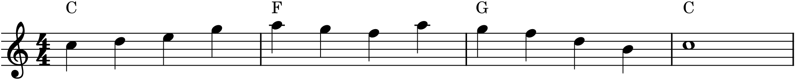

Melody and harmony are not two separate things a composer does; they are two views of one thing, and the fluent composer moves between them at will. Sometimes you begin with a tune and find the chords that fit it — that was Project 2, harmonizing a melody. Just as often you begin the other way: with a progression, a sequence of chords, and write a melody over it. This chapter is mostly about that second direction, because it reveals something the first hides — that a melody is, at its structural core, an elaboration of the harmony beneath it. Master both directions and you can start a piece from whichever end an idea arrives.
20.1The chord-tone skeleton
A chord progression already contains the bones of a melody. Each chord offers three or four notes — its chord tones — and if you simply choose one of them for each beat, you have a crude but correct melody: correct because every note belongs to its chord, so nothing clashes. This is the chord-tone skeleton, the structural frame a real melody hangs on.

The skeleton in Figure 20.1 is no one’s idea of a good melody — it lurches from chord tone to chord tone in bare half notes. But notice what it has: it is entirely consonant, it outlines the progression clearly, and it already has a rough contour. It is a structure waiting to be brought to life, and bringing it to life is a matter of two things — connecting its notes, and shaping them.
20.2Elaborating the skeleton
Turn the skeleton into a melody by filling the gaps between the chord tones with the non-chord tones of Chapter 16 — passing tones to step between them, neighbor tones to decorate them — and by giving the whole thing rhythm and a shaped contour (Chapter 17). The structural notes stay where they are, on the strong beats; everything added falls between and around them.

Compare Figure 20.2 with its skeleton and the method is laid bare: the strong-beat notes are unchanged — they are still the chord tones — but the leaps between them have been smoothed by stepwise passing tones, the rhythm has been animated, and the contour shaped into an arch with a single climax. The harmony supplied the structure; the elaboration supplied the melody. This is, quite literally, how a great deal of melody is written: choose the structural chord tones, then connect and decorate them.
20.3Chord tones on strong beats
Buried in that method is the single most useful rule for making a melody and a harmony agree: put chord tones on the strong beats, and non-chord tones on the weak. The strong beats — beat one especially, and beat three in 4/4 — are where the ear checks the melody against the harmony, so those are the moments that must be consonant. The weak beats, in between, are free to hold the passing and neighbor tones that create motion, because the ear hears them as connective, on their way to the next strong-beat chord tone.
This is why the elaborated melody sounds grounded and a random line over the same chords would not: its important moments land on notes the harmony supports. It is also why suspensions and other accented dissonances (Chapter 16) are so striking — they deliberately break this rule, putting a dissonance on a strong beat, precisely for the tension of doing so before resolving. The rule and its exceptions are the same tool.
20.4The other direction
Going the other way — from a melody to its harmony — you now understand as the reverse of the same process. A given melody’s strong-beat notes reveal its implied chords: if bar one leans on C and E, the harmony wants a C chord; if bar two lands on A and F, an F chord fits. Harmonizing, which you did by ear and rule in Project 2, is really just reading the chord-tone skeleton back out of an existing tune and supplying the chords it implies. The two directions are genuinely one skill viewed from opposite ends: a melody implies a harmony, a harmony frames a melody, and each is latent in the other.
20.5Composing them together
In practice the best music is often composed with both in mind at once, each guiding the other. You might sketch a progression, rough in a melodic skeleton, and then — while elaborating the tune — hear that one chord wants to change to better fit the line, adjusting the harmony to serve the melody you are discovering. This back-and-forth is normal and healthy; melody and harmony are partners, not a fixed foundation and a decoration on top. Which end you start from is a matter of where the idea came from: a hummed tune, or a chord progression under your hands at the keyboard. Either is a valid door into the same room.
The practical takeaway is a reliable way to write a melody whenever you have chords: lay down the chord-tone skeleton, then elaborate it — connect the tones with passing and neighbor notes, animate the rhythm, and shape a contour with one climax, keeping the chord tones on the strong beats throughout. It will not write itself into greatness, but it will always give you a melody that fits, which is the foundation every good tune is built on.
In MuseScore
MuseScore lets you build a melody on a harmonic frame and hear the fit at every step.
- Lay down the progression first: enter block chords on a staff, or just add chord symbols (Ctrl+K) across the bars —
C,F,G,C. This is your harmonic frame. - Sketch the skeleton on a staff above: for each chord, enter one or two of its chord tones on the strong beats, as in Figure 20.1. Play it against the chords — it will sound stiff but consonant.
- Elaborate by filling the weak beats with passing and neighbor tones (↑/↓ to fine-tune), animating the rhythm, and reshaping the contour until it arches to a single climax, as in Figure 20.2.
- Play melody and chords together after each change; if a strong-beat note clashes, move it to a chord tone, and if a chord fights the emerging tune, change the chord.
Try it: enter the chords C–F–G–C, then build the skeleton of Figure 20.1 above them and play it. Now elaborate it into Figure 20.2 — add the passing tones, turn the half notes into quarters, shape the arch — playing after each step. You will hear a bare harmonic frame become a real melody, one decision at a time, which is the whole craft of writing a tune to changes.